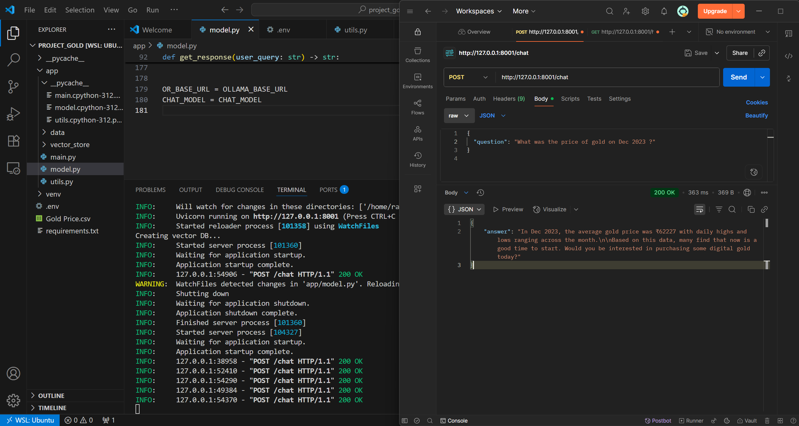
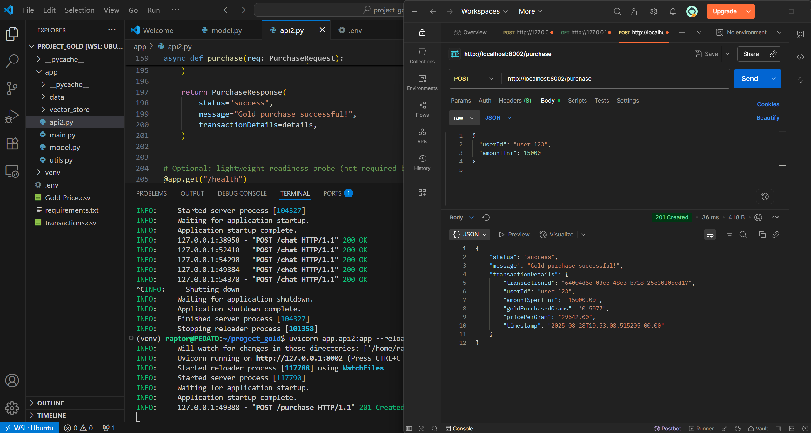
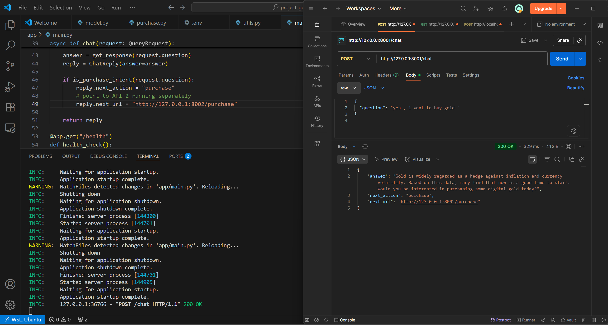

Gold Price Conversational AI Assistant
Decoupling conversational retrieval from transaction execution: A dual-API architecture uniting ChromaDB vector similarity, Ollama DeepSeek R1 reasoning, and idempotent purchase logging.

/query conversational contract.01. The Real Problem
LLMs excel at linguistic synthesis, but when queried about financial commodities like gold, baseline generative models frequently hallucinate rates, extrapolate speculative trends, and conflate historical spot prices with live market data. Furthermore, coupling speculative conversational text generation with financial checkout workflows in a single endpoint creates catastrophic failure modes in state handling and security.
The goal of this project was to construct a disciplined, self-contained Python backend that:
- Grounds conversational answers in historical tabular price records through vector similarity search rather than LLM parametric memory.
- Categorizes incoming intent (e.g., date-specific queries, 30-day rolling trend evaluations, or lowest price months) using deterministic logic before invoking the LLM.
- Strictly isolates conversational exploration (API 1) from transaction recording and settlement (API 2).
02. Verified System Architecture
Inspection of the repository's source code (specifically app/main.py, app/model.py, and app/purchase.py) confirms a dual-service architecture designed around separation of concerns:
HTTP Request
JSON payload with question: str
Intent Classifier
Regex matching & Rolling Avg
Vector Retrieval
Top-5 chunks (dist < 0.8)
DeepSeek R1
Strip <think> + Append Nudge
API 2 (Purchase API): Runs independently on app/purchase.py with Decimal precision, UUID tokens, thread-safe file lock, and transaction recording in transactions.csv.
03. RAG & Tabular Retrieval Pipeline
In app/model.py and app/utils.py, historical market data from Gold Price.csv is cleaned and transformed into semantic text summaries to make tabular numerical records understandable to dense vector embeddings:
def default_sentence(row):
open_ = int(row['open']) if 'open' in row and pd.notna(row['open']) else None
high = int(row['high']) if 'high' in row and pd.notna(row['high']) else None
low = int(row['low']) if 'low' in row and pd.notna(row['low']) else None
close = int(row['price']) if pd.notna(row['price']) else None
bits = [f"On {row['date'].strftime('%Y-%m-%d')}"]
if open_ is not None: bits.append(f"opened at ₹{open_}")
if high is not None: bits.append(f"peaked at ₹{high}")
if low is not None: bits.append(f"dropped to ₹{low}")
if close is not None: bits.append(f"closed at ₹{close}")
return ", ".join(bits) + "."Sentences are embedded into ChromaDB with all-MiniLM-L6-v2. When querying, the retrieval engine queries the nearest 5 neighbors and enforces a confidence distance threshold of distances[0] < 0.8 before feeding context to DeepSeek R1.
04. Intent Classification & Routing
Instead of passing all queries unconditionally to the generative model, classify_query() parses the prompt into distinct routing categories:
| Query Category | Detection Logic | Handling Strategy |
|---|---|---|
specific_price |
Regex matching month name and 4-digit year | Executes direct Pandas DataFrame filtering to extract exact monthly mean and range, bypassing LLM speculation. |
best_month |
Regex matching best / cheapest / lowest | Computes grouped monthly averages and returns the lowest historical month mathematically. |
trend_analysis |
Matches trend, increase, rise, performance | Computes an authentic 30-day rolling moving average delta (start vs end) in Pandas and passes the computed percentage to DeepSeek R1. |
generic_gold |
Matches gold commodity keywords | Queries ChromaDB vector collection and grounds DeepSeek R1 with the retrieved top-k context. |
Furthermore, is_purchase_intent() scans for conversion intent (e.g. buy, purchase, invest, ₹, grams), prompting the assistant to deliver structured next_action payload directing the user to the transaction interface.
05. Decoupled Purchase Engine (API 2)
In app/purchase.py, a completely separate FastAPI application provides a dedicated financial processing endpoint:
- Fixed-Point Decimal Arithmetic: Uses Python's standard
decimal.DecimalandROUND_DOWNto eliminate floating-point rounding errors common in currency conversions. - Thread Safety: Uses
threading.Lock()when appending to the local transaction CSV storage to prevent race conditions during concurrent write operations. - UUID & Idempotency: Generates unique transaction IDs (
uuid4) and ISO 8601 UTC timestamps for every completed order.
Authentic Interface Artifacts


06. Engineering Decisions & Honest Constraints
Verified Status & Limitations
- Local Ollama Dependency: Requires a local Ollama daemon hosting
deepseek-r1:1.5bon port 11434. In offline or unhosted environments, fallback messages are triggered viatry/exceptblocks. - Reasoning Token Stripping: DeepSeek R1 outputs raw reasoning traces wrapped in
<think>...</think>tags. The model adapter strips these viare.sub(r"<think>.*?</think>", "", answer, flags=re.DOTALL)to maintain a clean conversational UI. - Storage Architecture: For this research prototype, data is stored in CSV format rather than a PostgreSQL cluster. The code includes thread locking, but scaling to enterprise traffic would require an ACID SQL database with a transactional queue.